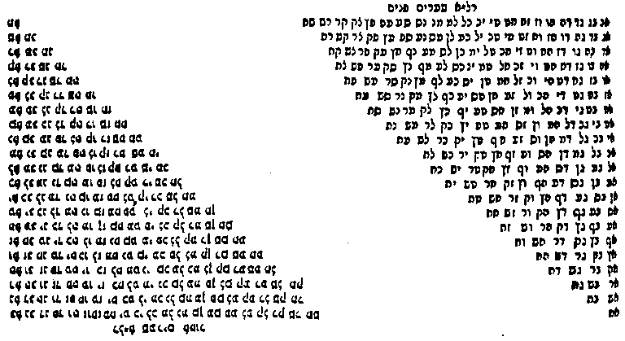
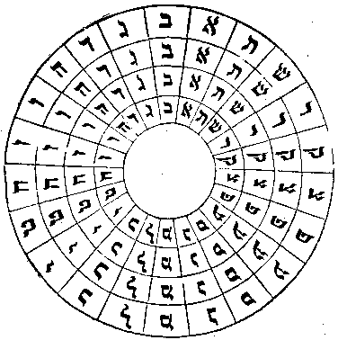

The Pomegranate Orchard, English translation with the Hebrew.
We named it "The Gate of Permutation" because in it is explained the matter of tziruf (permutation), which has three parts — permutation (tziruf), substitution (temurah), and gematria — whose secret is explained in this gate. Its chapters number eight.
30:1:1 Gate Thirty is called the Gate of Permutation:
שער שלשים נקרא שער הצירוף:
30:1:2 The knowledge of the secrets of our holy Torah is through the permutations and the gematriot and the substitutions, and initial letters and final letters and middle letters of words, and the beginnings of verses and the ends of verses, and the skipping of letters and the permutation of letters. And these matters are exalted and concealed, and their secret is too high, and there is no power in us to attain them because of their great concealment; for they change according to these ways without end and without limit. And of this it is said, "The measure thereof is longer than the earth," etc. (Job 11:9). And these matters we hope will be revealed after the resurrection, after the consuming of the turbid matter, and after the smitten body is refined and the form remains in the delight of its Creator. And behold, we have found the parts of this inquiry to be three; and they are the part of permutation, and the part of substitution, and the part of gematria. And we shall come to their explanation in these chapters:
ידיעת סודות תורתנו הק' הוא ע"י הצרופים והגימטריאות והתמורות וראשי תיבות וסופי תיבות ותוכי תיבות וראשי פסוקים וסופי פסוקים ודלוג אותיות וצרוף אותיות. ועניינים אלו נשגבים ונעלמים וסודם נשגבה ואין בנו כח להשיגם לרוב העלמם כי יתחלפו על פי דרכים אלו לאין סוף ולאין תכלית. ועל זה נאמר ארוכה מארץ מדה וגו'. וענינים אלו אנו מקוים שיתגלו אחר התחיה אחר העכול החומר העכור ואחר שיצרף הגוף הנגוף וישאר הצורה בחפץ יוצרה. והנה מצאנו חלקי הדרוש הזה ג' והם חלק הצרוף וחלק התמורה וחלק הגמטריא ונבא בביאורם בפרקים אלו:
30:1:3 Chapter One:
פרק ראשון:
30:1:4 On permutation. We have learned in the Sefer Yetzirah: "Two stones build two houses; three build six houses; four build twenty-four houses; five build a hundred and twenty houses; six build seven hundred and twenty houses; seven build five thousand and forty houses. From here onward go out and reckon what the mouth cannot speak and the ear cannot hear." Thus far. We have already explained in the Gate of Letters that the letters are the hewn stones of Binah, which are concealed spiritual powers. And one stone will not build a house at all; however, two stones build two houses; for in the joining of two letters two words come into being, each word one house. And the explanation: when two letters are joined together they make two words, like this, א"ב ב"א; for the word rolls from its head to its end and from its end to its head. And when three stones are joined together, six houses are built from them, like this: אב"ג אג"ב, behold two houses, at the head of each one Alef; בא"ג בג"א, behold two houses, at the head of each one Bet; גא"ב גב"א, behold two houses, at the head of each one Gimel; and their total is six houses. "And four build twenty-four houses": how so? אבג"ד אבד"ג אגב"ד אגד"ב אדב"ג אדג"ב, behold six houses, and their beginning Alef; באג"ד באד"ג בגא"ד בגד"א בדא"ג בדג"א, behold six houses, and their beginning Bet; גאב"ד גאד"ב גבא"ד גבד"א גדא"ב גדב"א, behold six houses, and their beginning Gimel; דבג"א דג"אב דא"גב דבא"ג דאב"ג דג"בא, behold six houses, and their beginning Dalet. Their total comes to twenty-four. And when we examine these permutations and look at them and consider them, they are found arranged: for in each one of the four parts there is the permutation of the three stones that preceded; and the end of the twenty-four is the reverse, in all its matters, of the first of them. And we shall look at their order and find them: that when a word of four or five or six comes into our hand, we must first raise in our mind that the two last stones are a word alone, and permute them alone. The example of this: Shelomoh [שלמה]. We raise in our mind that the word is מ"ה alone, and we permute from it two houses, מ"ה ה"ם; (and afterward ה"ל, and there will come up ל"ה ה"ל) (and afterward מ"ל, and two will come up in our hand, which are ל"ם מ"ל). And afterward we put at the head of each one of these words the third letter, and there will be six words of three letters. How so? The word ל"מ or מ"ל: we put Heh at the head, and it becomes הל"ם or המ"ל; and likewise for all three permutations that we made. And in this way we can permute easily, without error, even a word of ten letters, if we keep this order that we have arranged. And now we shall arrange Shelomoh in four letters; and it will be found that the two letters are permuted together and the three are permuted together. And this is its order, configured in four configurations, six [to] the configuration, "pure frankincense" (Lev. 24:7). שלמה שלהם שמלה שמהל שהלמ שהמל: behold six permutations, and they are the permutation of three letters, for Shin is at the head of all of them. And now we put Lamed, the second letter, at the head of six second words, like this: לשמה לשהם למשה למהש להשם להמש: behold six permutations, and they are the permutation of three letters, for Lamed is at the head of all of them. And now we put Mem, the third letter, at the head of six third words, like this: משלה משהל מלשה מלהש מהשל מהלש: behold six permutations, and they are the permutation of three letters, for Mem is at the head of all of them. And now we put Heh, the fourth letter, at the head of six fourth words, like this: השלמ השמל הלשם הלמש המשל המלש: behold six permutations, and they are the permutation of three letters, for Heh is at the head of all of them. And now, when we consider the initial letters of all the second words standing in a row, we find their initial letters Shelomoh, Shelomoh, six times, and "there is nothing froward or perverse in them" (Prov. 8:8). And when we go deep into these permutations, they are found [thus]: when they are two stones, they build only two; but when it rises to three, it makes three times the two preceding; for the reason that the third stone rolls the two; and when the third is exchanged in three letters, once it makes this one prevail and once it makes its fellow prevail, and it comes up to the initial letters; it is found twice three, which are six. And in this way four make four times six, which are twenty-four. And in this way it will come out that when it is of five letters, five times twenty-four, whose number is a hundred and twenty houses; and six stones build six times a hundred and twenty, which are seven hundred and twenty; and seven stones build seven times seven hundred and twenty, which are five thousand and forty houses. And from here onward in this way we reckon, up to a place where there is no number and reckoning; according to the multitude of the stones the houses are multiplied, how much more and more, as we explained. And after we have explained in this chapter the permutation of the simple words, that is to say, the letters in which there is no doubling, we shall explain the permutation of the doubled words:
**בצירוף. **תנן נספר יצירה שתי אבנים בונות שתי בתים שלש בונות ששה בתים ארבע בונות עשרים וארבעה בתים חמש בונות ק"ך בתים שש בונות שבע מאות ועשרים בתים שבע בונות חמשת אלפים וארבעים בתים מכאן ואילך צא וחשוב מה שאין הפה יכול לדבר ולא האזן יכולה לשמוע ע"כ. כבר בארנו בשער האותיות כי האותיות הם אבני מחצב הבינה שהם כחות נעלמות רוחניות ואבן אחת לא יבנה בית כלל אמנם שתי אבנים בונות שתי בתים כי בחבור שתי אותיות יתהוו שתי תיבות כל תיבה בית אחת. ופי' כי כאשר יתחברו שתי אותיות יחד יעשו שתי תיבות כזה א"ב ב"א כי יתגלגל התיבה מראשה לסופה ומסופה לראשה. וכאשר יתחברו ג' אבנים יחד יבנו מהם ששה בתים כזה אב"ג אג"ב, הרי שני בתים בראש כל א' אל"ף. בא"ג בג"א, הרי שני בתים בראש כל א' ב'. גא"ב גב"א, הרי שני בתים בראש כל א' ג', וכללם ששה בתים. וארבע בונות עשרים וארבעה בתים כיצד, אב"גד אבד"ג אגב"ד אגד"ב אדב"ג אדג"ב, הרי ששה בתים ותחלתם א'. באג"ד באד"ג בגא"ד בגד"א בדא"ג בדג"א, הרי ששה בתים ותחלתם ב'. גאב"ד גאד"ב גבא"ד גבד"א גדא"ב גדב"א, הרי ששה בתים ותחלתם ג'. דבג"א דג"אב דא"גב דבא"ג דאב"ג דג"בא, הרי ששה בתים ותחלתם ד'. עלו כללם עשרים וארבע. וכאשר נדקדק בצירופים הללו ונביט בהם ונחשוב בהם נמצאים מסודרים כי בכל א' מהד' חלקים יש צרוף הג' אבנים אשר קדמו וסוף העשרים וארבע הפך בכל ענייניו מהא' מהם. ונביט בסדרם ונמצאם כי כאשר יבא לידינו תיבה בת ארבע או חמש או שש צריך קודם שנעלה בדעתנו ששני האבנים האחרונים הם תיבה בלבד ונצרפם לבדם. המשל בזה שלמה. נעלה בדעתנו שהתיבה היא מ"ה בלבד ונצרף ממנו שני בתים מ"ה ה"ם (ואחר כך ה"ל ויעלה ל"ה ה"ל) (ואחר כך מ"ל ויעלה בידינו שנים שהם ל"ם מ"ל) ואח"כ נשים בראש כל א' מאלו התיבות האות השלישית ויהיה ששה תיבות לשלשה אותיות כיצד תיבה של ל"מ או מ"ל נשים בראש ה' ונעשה הל"ם או המ"ל וכן לכל ג' צירופים שעשינו. ועל דרך זה נוכל לצרף בנקל בלי טעות אפי' תיבה בת עשרה אותיות אם נשמור הסדר הזה שסדרנו. ועתה נסדר שלמה בד' אותיות וימצא כי הב' אותיות צירופים יחד והשלשה צירופם יחד. וזה סדרו ערוך בד' מערכות שש המערכת לבונה זכה. שלמה שלהם שמלה שמהל שהלמ שהמל, הרי ששה צרופים וצרופם ג' אותיות כי ש' בראש כלם. ועתה נשים ל' אות שנייה בראש ששה תיבות שניות כזה לשמה לשהם למשה למהש להשם להמש, הרי ששה צרופים וצרופם ג' אותיות כי ל' בראש כלם. ועתה נשים מ' אות שלישית מראש ששה תיבות שלישיות כזה משלה משהל מלשה מלהש מהשל מהלש, הרי ששה צרופים וצרופם ג' אותיות כי מ' בראש כלם. ועתה נשים ה' אות רביעית בראש ששה תיבות רביעיות כזה השלמ השמל הלשם הלמש המשל המלש, הרי ששה צרופים וצרופם ג' אותיות כי ה' בראש כלם. ועתה כאשר נתבונן בראשי תיבות של כל תיבות השניות העומדות בשורה נמצא ראשי תיבותם שלמה שלמה ששה פעמים ואין בהם נפתל ועקש. וכשנעמיק בצירופים האלה נמצאים כי כשהם שתי אבנים אינם בונות כי אם שתים אבל כשיעלה אל הג' יעשה ג' פעמים שתים הקודמים מטעם כי האבן הג' מגלגל השתים ובהתחלף הג' בג' אותיות פעם יגביר זאת ופעם יגביר חברתה ויעלה לראשי התיבות נמצא שני פעמים שלש שהם ששה, ועל דרך זה ארבעה יעשו ד' פעמים ששה שהם עשרים וארבע. וע"ד זה יעלה להיות כשהוא בן חמשה אותיות ה' פעמים כ"ד שמספרם מאה ועשרים בתים וששה אבנים בונים ששה פעמים מאה ועשרים שהם שבע מאות ועשרים, ושבעה אבנים בונים ז' פעמים שבע מאות ועשרים שהם חמשת אלפים וארבעים בתים. ומכאן ואילך ע"ד זה נחשוב עד מקום שאין מספר וחשבון לפי רוב האבנים יכפלו הבתים על אחת כמה וכמה כדפי'. ואחר שפי' בפרק זה צרוף התיבות הפשוטות ר"ל האותיות שאין בהם כפל נבאר צירוף התיבות הכפולות:
30:2:1 All the matters of permutation that we explained in the previous chapter are on condition that there be no doubled letter at all in the permutation; and then the permutation comes up in the number of the rungs of the ladder of which we spoke. However, if a doubled letter is found, then immediately half the permutation that should come according to the number of the stones is subtracted, whether many or few. And for this reason the four-letter name and the name EHYH come up in their permutation only to twelve permutations; half the permutation that should be in it is found lacking; for four stones build twenty-four houses, and these four stones build only twelve, half of what is fitting. And likewise, if it is of three letters, whose law is six words, if one letter is doubled it is permuted three times alone. And likewise, if there are three doubled letters equal in the word of the doubling: the first subtracts half the permutation, as we explained; and the second doubling, which is a third letter, subtracts two thirds of the remaining permutation that the first doubling left; and from twelve they return to four. How so? אגג"ג: it should have had twenty-four permutations, and because of the three equal letters only four remained. And if it is a word of five letters, whose simple permutation is a hundred and twenty permutations, if one letter is doubled, as אבדג"ד, only sixty permutations remain; for half the permutation is subtracted because of the one doubling. And if another letter is doubled, as אבד"דד, then because of the third letter the doubling subtracts two thirds of the remaining permutation, and only twenty permutations come into being from it, which are a third. And if a fourth letter is doubled, then a quarter of the permutation that the second doubling, which is a third letter, left remains. The example: אדד"דד: no man can permute it except five times, which is a quarter of the twenty remaining, as we explained. And if another, fifth, letter is also doubled, then a fifth of the remaining permutation remains, and it is permuted only one permutation, which is a fifth of the five. The example of this: דדדד [דדדדד]: there is no permutation in it except once. The rule that emerges: according to the count of the doubling letter, so is the measure of the remainder of the permutation. If two, which is the first doubling, that is to say, that there are only two doubled there, then half the permutation remains; and if they are three, then a third of the permutation remains of what would have been fitting if there were only two doubled; and likewise a quarter, only a quarter of the remainder remains; and likewise a fifth, and likewise a sixth, and likewise a seventh; and in this way we may infer, as we explained. All this rule is when the doubling is of the kind of the first doubling; the example: that the matter of the second doubling is of the kind of the first doubling. However, if it is of the kind of a second doubling, as the example א"א ב"ב, then it has another law. For in the first doubling half the permutation is subtracted, as we set first: for a word of four letters should have had twenty-four permutations; and the Alef was doubled; half the permutation was subtracted, and twelve permutations remained. And because of the second doubling only six remain; for it subtracted half of the remaining permutation that the first doubling left. The example: א"א ב"ב: there is no ability to permute it except six times, which is half of the twelve remaining, as we explained. And if the word is of five letters, whose law would be to roll a hundred and twenty times, and two doublings were doubled in it, א"א ב'ב'ג', then its law will be thus: in the first doubling half the permutation, which is a hundred and twenty, is subtracted, and sixty of them remain; and in the second doubling half of the sixty is subtracted, and thirty remain. And if the word is of six letters and all of them are pairs, which, if not for the doubling, its law would be to roll seven hundred and twenty times: and because of the first doubling half the measure is subtracted, and of the seven hundred and twenty, three hundred and sixty remain; and in the second doubling half the remaining permutation is subtracted from three hundred and sixty; a hundred and eighty remain; and in the third doubling [two thirds] of the permutation that remained from the second doubling are subtracted, and from a hundred and eighty sixty remain, which is a third of the hundred and eighty. And if a word is of four pairs, its law will be thus: for the first doubling subtracted the half, and the second doubling subtracted the half from the remaining permutation, and the third doubling subtracted two thirds of the remaining permutation, and only one third alone remained, as we explained above; and the fourth doubling will subtract three quarters from the third that the third doubling left, and only a quarter of it remains. And in this way we may infer for all the doublings, according as they multiply or diminish. And this is the way of the permutation of the doubled ones, according to what the commentators wrote and according to what appears by the power of experiment. And after we have explained the manifestation of the permutation in the matter of the letters, we shall explain the reason for their permutation in spirituality in a chapter by itself; for these things need short chapters, so that the intellect be able to encompass them and not be confused by them:
כל עניני הצרוף שפי' בפ' הקודם הוא בתנאי שלא תהיה בצירוף אות כפולה כלל ואז יעלה הצירוף במספר מדרגות הסולם אשר אמרנו. אמנם אם נמצא אות כפולה אז מיד יגרע חצי הצרוף הראוי לבא לפי מספר האבנים הן רב הן מעט. ומטעם זה שם בן ד' ושם אהי"ה לא יעלה בצירופו כי אם י"ב צרופים נמצא חסר חצי הצירוף הראוי להיות בו כי ארבעה אבנים בונות עשרים וארבעה בתים וד' אבנים אלה לא יבנו אלא י"ב חצי מן הראוי. וכן אם יהיה בן ג' אותיות שמשפטו הוא ששה תיבות אם יכפל אות אחת יצטרף ג' פעמים לבד. וכן אם יהי' ג' אותיות כפולות שוות בתיבת הכפל, הא' יגרע חצי הצירוף כדפי' והכפל השני שהיא אות ג' יגרע שני שלישי הצירוף הנשארים שהותיר הכפל הראשון ומי"ב יחזרו ד'. כיצד אגג"ג שמן הראוי היה שיהיה בעל כ"ד צרופים ומפני ג' האותיות השוות לא נשאר כי אם ד'. ואם יהיה תיבה בת חמשה אותיות שצירופו הפשוט מאה ועשרים צרופים אם יכפל אות אחד כמו אבדג"ד לא ישאר כ"א ששים צרופים כי חצי הצירוף נגרע מפני הכפל האחת. ואם יכפל אות אחרת כמו אבד"דד אז נגרע מפני האות השלישי כפל שני שלישי הצרוף הנותרים ולא יתהוה ממנו כ"א עשרים צרופים שהם שליש. ואם יכפל אות רביעית אז יוותר רביע הצרוף אשר הותיר הכפל השני שהוא אות שלישית. המשל אדד"דד אין אדם יכול לצרפו כי אם ה' פעמים שהוא רביע העשרים הנותרים כדפי'. ואם יכפל ג"כ אות אחרת חמשית אז יוותר חמישית הצירוף הנותר ולא יצטרף כי אם צירוף אחד שהוא חמישית החמשה. המשל בזה דדדד אין בו צרוף כי אם פעם אחת. הכלל העולה לפי מנין האות הכפל כך השיעור מותר הצירוף אם שנים שהוא כפל ראשון ר"ל שאין שם כפולות כי אם שנים אז נשאר חצי הצירוף ואם הם שלשה אז נשאר שלישית הצירוף ממה שהיה ראוי אם לא היו כפולות כ"א שנים וכן רביעית לא ישאר כ"א רביעית הנותר וכן חמישית וכן ששית וכן שביעית וע"ד זה נקיש כדפי'. כל זה הכלל הוא בהיות הכפל מעין כפל הראשון, המשל כי ענין הכפל השני הוא ממין הכפל הראשון. אמנם אם יהיה ממין כפל השני כמו המשל א"א ב"ב אז לו דין אחר כי בכפל הראשון נגרע חצי הצרוף כמו שהקדמנו כי תיבה בת ד' אותיות הי' ראוי שיהיו בה כ"ד צרופים ונכפל הא' נגרע חצי הצירוף ונותר י"ב צרופים ומפני הכפל השני לא יותר כ"א ששה כי גרע חצי הצרוף הנותר אשר הותיר הכפל הראשון. המשל א"א ב"ב אין יכולת לצרפו כ"א ששה פעמים שהוא חצי הי"ב הנשארים כדפי'. ואם התיבה בת חמש אותיות שדינו היה להתגלגל ק"כ פעמים ונכפל בו שני כפלים א"א ב'ב'ג' אז יהיה דינו כך בכפל הא' נגרע חצי הצרוף שהוא ק"כ ונותר ס' מהם ובכפל השני נגרע חצי הששים ונותר שלשים. ואם התיבה בת ששה אותיות וכלם זוגות שאם לא מפני הכפל היה דינו להתגלגל תש"כ פעמים ומפני הכפל הא' נגרע חצי השיעור ונותר מהתש"כ שלש מאות וששים. ובכפל השני נגרע חצי הצרוף הנותר משלש מאות וששים נשארו ק"פ. ובכפל הג' נגרע ב' שלישי הצרוף שנשארו מהכפל הב' ומק"פ נשארו ס' שהוא שליש הק"פ. ואם יהיה בתים בת ד' זוגות יהיה דינו כך כי כפל הראשון גרע החצי והכפל השני גרע החצי מהצרוף הנותר והכפל הג' גרע ב' שלישי הצרוף הנותר ולא נותר כי אם שליש א' לבד כדפירשנו לעיל והכפל הד' יגרע ג' רביעיות מהשלישית שהותיר הכפל הג' ולא נשאר כ"א רביע ממנו ועל דרך זה נקיש לכל הכפלים כפי שיתרבו או יתמעטו. וזה דרך צירוף הכפולים כפי אשר כתבו המפרשים וכפי הנראה בכח הנסיון. ואחר שבארנו מציאות הצירוף בחומר האותיות נבאר טעם צירופם ברוחניות בפרק בפני עצמו כי הדברים האלה צריכים פרקים קצרים כדי שיוכל השכל להקיפם ולא יתבלבל בהם:
30:3:1 It has already been explained in the Gate of Letters what the spirituality of the letters is and their manifestation. And therefore, when we come to permute three letters, since these letters are spiritualities, simple forms, they must necessarily be compounded and included each one of its fellow; for such is the way of spiritual things. For this matter did not happen only to the sefirot; but this matter happened also to the branches and the emanations that branch out from them, since they are emanated forms. And the proof of this is from what we said in the Gate of Palaces, chapter 4, on the matter of the seventy of the Sanhedrin who sit in "the round goblet" (Song 7:3), who are all included together in each one of them. And since this matter is so, let us say: the letters אי"ן [Ayin], which hint at Keter, Chokhmah, Binah, as is explained in the Gate of the Glossary of Titles: behold, certainly Keter is included of Chokhmah and Binah, and Chokhmah of Keter and Binah, and Binah of Keter and Chokhmah. But it is included in them in two ways: either that Chokhmah receives from Keter and bestows in Binah. And for this the order of the letters was obligated thus: the Yod of Ayin, which is Chokhmah, prevails, because all three letters are in the very self of Chokhmah; and therefore its aspect prevails always; and behold, therefore Yod is at the head of the permutation. And afterward Alef, because the hint in it is Keter, and it receives from Keter and bestows in Binah; and therefore Alef prevails over Nun; and this is יא"ן, and it is the first permutation. Further, it is permuted in another way, that Binah prevails over Chokhmah, in the secret of the returning light; and therefore it receives light from Binah and bestows in Keter; and therefore the Nun of Binah prevails over the Alef that is in Keter; and this is the second permutation, which is ינ"א, to Chokhmah; for Chokhmah always prevails. And likewise to Keter two, for these causes. How so? The letter of Keter is Alef, and therefore it always prevails; and because sometimes there is bestowal from Chokhmah to Binah, according to the order of the light, therefore its permutation is אי"ן; and because also sometimes, in the secret of the returning light, Binah prevails over Chokhmah, therefore its permutation is אנ"י; and they are two permutations to Keter. And likewise two to Binah, for these causes. How so? The letter of Binah is Nun, and therefore it always prevails; and because sometimes it receives from Keter through Chokhmah, in the order of the light, therefore Alef prevails over Yod, and its permutation is נא"י; and because sometimes Chokhmah prevails over Keter, in the secret of the returning light, therefore the letter Yod prevails over Alef, and its permutation is ני"א.
כבר נתבאר בשער האותיות ענין רוחניות האותיות ומציאותם ולכן כאשר נבא לצרף ג' אותיות אחר שהאותיות האלה הם רוחניות צורות פשוטות בהכרח תהיינה מורכבות ונכללות כל אחד מחברתה כי כן דרך הרוחניות. כי לא לבד קרה הענין הזה לספי' אבל קרה ענין זה גם לענפים ואצילות המסתעפות מהם מאחר שהם צורות נאצלות. וראייה לזה ממה שאמרנו בשער היכלות פ"ד מענין ע' סנהדרין היושבים באגן הסהר שהם כוללים כלם יחד בכל א' מהם. ואחר היות הענין הזה כך, נאמר אותיות אי"ן שהם רומזות בכתר חכמה בינה כמבואר בשער ערכי הכנויים הנה ודאי הכתר כלול מחכמה ובינה והחכמה מכתר ובינה והבינה מכתר וחכמה אבל יוכלל בהם בשני פנים אם שיקבל החכמה מהכתר וישפיע בבינה. ולזה חוייב סדר האותיות כך יוד של אין שהיא חכמה גוברת מפני שכל האותיות השלשה הם בעצם החכמה ולכן בחינתה יגבר לעולם והרי לכן י' בראש הצירוף. ואח"כ א' מפני שהרמז בו הכתר והוא מקבל מהכתר ומשפיע בבינה ולכן א' יגבר על ן' והיינו יא"ן והוא צרוף א'. עוד יצטרף דרך אחרת שיגביר הבינה על החכמה בסוד אור החוזר ולכן יקבל אור מהבינה וישפיע בכתר ולכן יגביר נון של הבינה על א' שבכתר וזהו צרוף שני שהיא ינ"א אל החכמה כי לעולם החכמה גוברת. וכן אל הכתר שתים לסבות אלו כיצד אות הכתר הוא א' ולכן לעולם גוברת ולפי שלפעמים יושפע מחכמה אל הבינה כסדר האור לכן צרופו אי"ן ומפני שגם לפעמים בסוד האור החוזר יגביר הבינה על החכמה ולכן צרופו אנ"י והם שני צרופים אל הכתר. וכן שתים אל הבינה לסבות אלו כיצד אות הבינה נון ולכן לעולם גוברת ולפי שלפעמים מקבל מהכתר ע"י החכמה בסדר האור לכן יגביר או א' על י' ויהיה צרופו נא"י ולפי שלפעמים יגביר החכמה על הכתר בסוד אור החוזר לכן יגביר אות י' על א' ויהיה צירופו ני"א.
30:3:2 Behold, in the word אנ"י there are six permutations explained, which are: אנ"י אין in the secret of the Alef; יא"ן ינ"א in the secret of the Yod; נא"י ני"א in the secret of the Nun. And this will be the secret of the permutation for four letters or for five. However, when the letters are doubled, even though in the corporeal permutation they are not permuted, it is possible for them to be permuted in the spiritual permutation, for their spirituality is not equal, as we explained in the Gate of Particulars of Names, on the matter of the twenty-four permutations that are in the four-letter name, which is explained in the Sefer ha-Bahir; let it be looked at there. However, these doubled ones are, these males and these females, as is explained there. And brevity is good. And because of the matter of the inclusion of the lights and their illuminating these in these, it is found that some of the ancients explained that, in the permutation and the rolling of the name of seventy-two or the other names, after great seclusion, there will be revealed to the deserving righteous one who has understanding in their matter something of the part of the bat kol; that is to say, "the spirit of YHVH spoke by me, and His word was upon my tongue" (2 Sam. 23:2); for the reason that he joins the powers and unites them and makes them long for one another, "according to the space of each, with wreaths" (1 Kgs. 7:36), until much effluence is bestowed upon him; and on condition that the one who occupies himself with this be a vessel prepared to receive the spirituality and worthy of it; for if not, it will turn into a cruel one, and he will be turned into "the degenerate plant of a strange vine" (Jer. 2:21), "and offer strange fire, which He had not commanded" (Lev. 10:1). And after we have occupied ourselves in the preceding chapters with understanding the permutation of the letters, we shall come now to explain the matter of the permutation of the vowel-points:
הנה במלת אנ"י יש ו' צירופים מבוארים שהם אנ"י אין בסוד הא', יא"ן ינ"א בסוד היו"ד, נא"י ני"א בסוד הנון. וזה יהיה סוד הצירוף לד' אותיות או לחמשה. ואולם כשיוכפלו האותיות עם היות שבצרוף הגשמי לא יצטרפו כבר אפשר להם להצטרף בצרוף הרוחני שאין רוחניותן שוה כדפי' בשער פרטי השמות בענין כ"ד צרופים שבשם בן ד' שפי' בספר הבהיר יעוין שם. ואולם יהיו כפולים אלו זכרים ואלו נקבות כמבואר שם. והקצור יפה. ומפני ענין כללות האורות והארתם אלו באלו נמצא שפי' קצת מהקדמונים כי בצרוף וגלגול שם בן ע"ב או שאר השמות אחר התבודדות גדול יתגלה לצדיק הזכאי המשכיל בעניינם קצת מחלק הבת קול ר"ל רוח ה' ידבר בו ומלתו על לשונו מטעם שהוא מחבר הכחות ומיחדם ומחשקם איש אל אחיו כמער איש ולויות עד שיושפע עליו רוב השפע ובתנאי שיהיה העוסק בכך כלי המוכן לקבל הרוחניות וראוי לכך שאם לא כן יהפך לאכזר ונהפכו לו סורי הגפן נכריה והקריב אש זרה אשר לא צוה ה'. ואחר שבפרקים הקודמים נתעסקנו בהשכלת צרוף האותיות נבא עתה לבאר ענין צרוף הנקודות:
30:4:1 On the permutation of the vowels. However, the vowels by way of permutation: most of the commentators agreed to permute only in five vowels, according as their mnemonic is "engravings of a signet" (Exod. 28:11). And some wrote that they are with the sheva. And all this seems strained to us; for the vowels are twelve, and their powers and their form differ one from another, as we explained in the Gate of Vowel-Points. If so, it is fitting to permute and roll the words by all of them. However, so as not to breach the fence and border that our first ancients set, we shall write only the permutation of the five, which are נוֹטָרֶיִקֻוּן [notarikon]; and from this the student may infer to the rest; and if it does not suffice the student, let him look in the Gate of Particulars of Names; for there we spoke at length on these differences that are between the commentators and us. And first, the number rises to the words and these permutations in the way that the number of the permutation is multiplied and rises in the letters, as is explained in the first chapter. How so? The letter Alef builds five houses, and these are they: אֹ אִ אֻ אֵ אָ, behold five; and if six, six come up; and if twelve, twelve. And when we add a second letter they come up to five times five; and likewise when they are six vowels they come up to six times six, which are thirty-six; and likewise, if they are twelve, they come up to twelve times twelve, which are a hundred and forty-four, as we permuted in the aforementioned gate. And this is the permutation of two letters in five vowels:
בצרוף הניקוד. ואולם הנקודות בדרך הצרוף רוב המפרשים הסכימו שלא לצרף אלא בחמש נקודות לפי שסימנם פתוחי חותם. ויש שכתבו שהם עם השבא. וכל זה נראה לנו דוחק כי הנקודות הם י"ב וכחותיהם וצורתם משונה זו מזו כדפירשנו בשער הניקוד א"כ ראוי לצרף ולגלגל התיבות ע"י כלם ואולם שלא לפרוץ גדר וגבול אשר גבלו ראשונים קדמונינו לא נכתוב כ"א צרוף החמשה שהם נוֹטָרֶיִקֻוּן ומזה יקיש המעיין אל השאר ואם לא יספיק למעיין יעויין בשער פרטי השמות כי שם הארכנו בחלוקים אלה שבין המפרשים ובינינו. וראשונה יתעלה המספר אל התיבות והצירופים האלה בדרך שיתרבה ויתעלה מספר הצירוף באותיות כמבואר בפ"ק. כיצד אות א' יבנה ה' בתים ואלו הם אֹ אִ אֻ אֵ אָ הרי חמשה ואם ששה יעלו ששה ואם י"ב י"ב וכאשר נוסיף אות שנייה יעלו אל חמשה פעמים חמשה וכן כשהם שש נקודות יעלו ששה פעמים ששה שהם ל"ו וכן אם יהיו י"ב יעלו י"ב פעמים י"ב שהם קמ"ד כמו שצרפנו בשער הנזכר. וזהו צרוף שתי אותיות בה' נקודות:
30:4:2

30:4:3 Behold, we have set out the way: how two stones build five times five, which are twenty-five. And when we permute a word of three letters, it comes up to five times twenty-five, which are a hundred and twenty-five. How so? Each letter is five, and falls upon the twenty-five five times; a hundred and twenty-five are found. And this is its form. Behold, we have arranged five forms of twenty-five words each one; for in the reigning of the kamatz, twenty-five. And a man will understand the matters of himself, by his understanding of the forms, more than he would understand by his study of the matters by word of mouth.
הנה הצבנו דרך כיצד שני אבנים בונים ה' פעמים ה' שהם כ"ה וכאשר נצטרף בת ג' אותיות יעלה ה' פעמים כ"ה שהם קכ"ה כיצד כל אות הם ה' ונופל על הכ"ה ה' פעמים נמצאו קכ"ה וזו צורתו. הנה סדרנו חמשה צורות של חמשה ועשרין תיבות כל א' ואחד כי בהמלכת הקמץ כ"ה והעניינים ישכיל האדם מעצמו בהשכלתו בצורות יותר ממה שישכיל בעיונו בעניינים בעל פה.
30:4:4 And behold, if the letters are four, the permutation comes up to six hundred and twenty-five; and if the letters are five, the permutation comes up to three thousand one hundred and twenty-five. For in three letters they are a hundred and twenty-five; for with the doubling of the letter it prevails five times a hundred and twenty-five, which are six hundred and twenty-five; and if we add another letter it makes five times six hundred and twenty-five; and in this way its number rises; for what was the total of the permutation becomes one portion of five portions of the permutation, as is drawn before you. And this is enough of a note on the matter of the permutation of the vowels, with the help of Heaven. And behold, what came up in our mind to compose on the matter of the part of permutation is completed; and now we shall come to the part of substitution, with the help of Heaven:
והנה אם יהיו האותיות ארבע יעלה הצרוף ו' מאות וחמשה ועשרים ואם יהיו האותיות ה' יעלה הצירוף שלשת אלפים ומאה ועשרים וחמשה כי באותיות שלש הם מאה ועשרים וחמשה שבכפל האות יגבר ה' פעמים קכ"ה שהם שש מאות עשרים וחמשה ואם נוסיף אות אחרת יעשה ה' פעמים שש מאות וכ"ה וע"ד זה יעלה מספרו כי מה שהיה כלל הצירוף יעשה נתח אחד מחמשה נתחי הצירוף כמצוייר לפניך ודי בזה הערה לענין צרוף הנקוד בס"ד והנה נגמר מה שעלה בדעתינו לחבר בענין חלק הצרוף ועתה נבא בחלק התמורה בס"ד:
30:5:1 The matter of substitution is to illuminate letter by letter in the two hundred and thirty-one gates, as we shall explain. And there is a difference between permutation and substitution as high as the heavens above the earth. And the reason is that in permutation "the hallowed stones are poured out" (Lam. 4:1) and are not changed from these letters to those letters, except that they are at the head of the permutation; and those that are at the head of the permutation are those at the end of the permutation; but it is like a wheel that rolls from its head to its end and from its end to its head, and head becomes end and end head, head middle and middle head, end middle and middle end; and the letters never change, even if they change in their order. But substitution is the exchange of the letters in the twenty-two alphabets, as we shall explain; as the example: the name ידו"ד אלד"ינו ידו"ד, which is exchanged in Avgad into כוז"ו במוכס"ו כו"זו; and in Atbash into מצפ"ץ תכצ"מטפ מצפ"ץ; and likewise in the other alphabets, up to twenty-two. And this way is more praiseworthy than gematria, as we shall explain; for in gematria the letters are exchanged, even though the number of these is not as the number of the one; for sometimes from three they make four, and from four three, as we shall explain:
ענין התמורה להאיר אות באות ברל"א שערים כאשר נבאר. ויש חלוק בין צרוף לתמורה כגבוה שמים על הארץ. והטעם כי הצירוף תשתפכנה אבני קדש ולא תתהפכנה מאותיות אלו לאותיות אלו זולת שהם בראש הצירוף ואותם שהם בראש הצירוף הם אותם שבסוף הצרוף אלא שהוא כמו גלגל המתגלגל מראשו לסופו ומסופו לראשו ונעשה ראש סוף וסוף ראש, ראש תוך ותוך ראש, סוף תוך ותוך סוף. והאותיות לעולם לא ישתנו ואף אם ישתנו בסדרם אבל התמורה הוא חילוף האותיות בכ"ב אלפא ביתות כאשר נבאר כמו המשל שם ידו"ד אלד"ינו ידו"ד המתחלף באבג"ד כוז"ו במוכס"ו כו"זו. ובאתב"ש מצפ"ץ תכצ"מטפ מצפ"ץ וכן בשאר אלפ"א ביתו"ת עד כ"ב. ודרך זה משובחת מהגימטריא כאשר נבאר כי בגימטריא יתחלפו האותיות ואף שאין מספר אלו כמספר א' כי לפעמים משלש יעשו ארבע ומארבע שלש כאשר נבאר:
30:5:2 These are the twenty-two alphabets in which the letters are exchanged, as they came in the Sefer Yetzirah; and he called them the two hundred and thirty-one gates, because they are two hundred and thirty-one pairs:
אלו הם כ"ב אלפ"א שבהם יתחלפו האותיות כאשר באו בספר יצירה וקראם רל"א שערים מפני שהם רל"א זוגות:
30:5:3 אל בת גש דר הק וץ זף חע טס ין כמ:
אל בת גש דר הק וץ זף חע טס ין כמ:
30:5:4 אב גת דש הר וק זץ חף חע יס כן למ:
אב גת דש הר וק זץ חף חע יס כן למ:
30:5:5 אג דת הש ור זק חץ טף יע כס לן במ:
אג דת הש ור זק חץ טף יע כס לן במ:
30:5:6 אד בג הת וש זר חק טץ יף כע לס מן:
אד בג הת וש זר חק טץ יף כע לס מן:
30:5:7 אה בר ות זש חר טק ין כף לע מס גן:
אה בר ות זש חר טק ין כף לע מס גן:
30:5:8 או בה גד זת חש טג יק כץ לף מע נס:
או בה גד זת חש טג יק כץ לף מע נס:
30:5:9 אז בו גה חת טש יד כק לץ חף נע דס:
אז בו גה חת טש יד כק לץ חף נע דס:
30:5:10 אח בז גו דה טת יש כר לק מץ נף סע:
אח בז גו דה טת יש כר לק מץ נף סע:
30:5:11 אט בח גז דו ית כש לר מק נץ סף הע:
אט בח גז דו ית כש לר מק נץ סף הע:
30:5:12 אי בט גח דז הו כת לש מר נק סץ עף:
אי בט גח דז הו כת לש מר נק סץ עף:
30:5:13 אב בי גט דח הז לת מש נר סק עץ יף:
אב בי גט דח הז לת מש נר סק עץ יף:
30:5:14 אל בך גי דט הח וז מת נש סר עק פץ:
אל בך גי דט הח וז מת נש סר עק פץ:
30:5:15 אמ בל גס די הט זה צת סש ער פק זן:
אמ בל גס די הט זה צת סש ער פק זן:
30:5:16 אג בם גך דק הי וט זח סת עש פר צק:
אג בם גך דק הי וט זח סת עש פר צק:
30:5:17 אס בג גמ דל הס וי זט עת פש צר חק:
אס בג גמ דל הס וי זט עת פש צר חק:
30:5:18 אע בס גנ דמ הל וכ זי חט פת צש קר:
אע בס גנ דמ הל וכ זי חט פת צש קר:
30:5:19 אף בע גס דנ המ ול זכ חי צת קש טר:
אף בע גס דנ המ ול זכ חי צת קש טר:
30:5:20 אץ בף גע דס הג ומ זל חס טי קת רש:
אץ בף גע דס הג ומ זל חס טי קת רש:
30:5:21 אק בץ גף דע הס וג זם חל טב רת יש:
אק בץ גף דע הס וג זם חל טב רת יש:
30:5:22 אר בק גץ דף הע וס זג חמ טל יב שת:
אר בק גץ דף הע וס זג חמ טל יב שת:
30:5:23 אש בר גק דן הף וע זס חג טמ יל כת:
אש בר גק דן הף וע זס חג טמ יל כת:
30:5:24 את בש גר דק הץ וף זע חס טן ימ כל:
את בש גר דק הץ וף זע חס טן ימ כל:
30:5:25 Thus far the two hundred and thirty-one gates that are in the Sefer Yetzirah are completed; and in them the letters are exchanged, all that is needed for the exchange of the names and the powers:
ע"כ נשלמו רל"א שערים שבספר יצירה ובהם מתחלפות האותיות כל אשר יצטרף אל החילוף השמות והכחות:
30:5:26 Further, there are other alphabets that we found scattered among the words of the old books; and these are they. The first is the straight alphabet, and it is this:
עוד יש אלפא ביתות אחרות מצאנו מפוזרות בין דברי הספרים הישנים ואלו הם הראשונה האלפא ביתא הישר והיא זאת:
30:5:27 אב גד הו זח טי כל מג סע פצ קר שת מנצפך:
אב גד הו זח טי כל מג סע פצ קר שת מנצפך:
30:5:28 אחס בטע גיף דכץ הלק ומר [פנים ואחור ואלו הן] זנשת:
אחס בטע גיף דכץ הלק ומרפנים ואחור ואלו הן: זנשת:
30:5:29 איק בנר גלש דמת הנך וסס זען חפף טצץ:
איק בנר גלש דמת הנך וסס זען חפף טצץ:
30:5:30 אל בם גן דס הע וף זץ חק טר יש כת:
אל בם גן דס הע וף זץ חק טר יש כת:
30:5:31 אט בח גז דו הג סס על פך צי קת רש:
אט בח גז דו הג סס על פך צי קת רש:
30:5:32 תשרק צפעם נמלך יטחז והדגבא:
תשרק צפעם נמלך יטחז והדגבא:
30:5:33 And besides these two hundred and thirty-one, we found further in the mouths of the masters of wisdom two hundred and thirty-one gates written front and back; these are they:
ומלבד הרל"א האלה מצאנו עוד בפי בעלי החכמה רל"א שערים כתובים פנים ואחור אלו הן
30:5:34

30:5:35

30:6:1 And these gates and alphabets are found in this way: when we write one alphabet reversed and one straight, then Atbash comes out. And by rolling the circles there comes out further a second alphabet, which is א"ש ב"ר, etc.; and likewise all of them, some of it from the front side and some of it from the back. And so that this matter be understood according to its pattern, we have drawn here the circles, as needed.
ונמצא השערים האלה והאלפא ביתות הם ע"ד זה כשנכתוב אלפא ביתא א' בהפך והא' ביושר אז יצא את ב"ש. ובגלגול העגולים עוד יצא אלפא ביתא שניה שהיא א"ש ב"ר וכו' וכן כלם קצתה מצד פנים וקצתה מצד אחור. וכדי שיובן הענין הזה על מתכונתו ציירנו הנה העגולים כפי המצטרך.
30:6:2 Behold, we have set out these four circles one inside another: three alphabets straight, אבג"ד, and the fourth תשרק. From the first two we can produce the two hundred and thirty-one gates, front and back, as they are written in the previous chapter; and from the three circles that are straight we can produce from them alphabets of Achas Beta and the like, compounded of three letters; and from the last two, which are the one straight and the second תשרק, we can produce the twenty-two alphabets that are in the Sefer Yetzirah, which we also copied in the previous chapter. And after the manifestation of the alphabets and their rolling have been explained, we wish to explain the matter of substitution and its cause. And the matter is that the letters are in Tiferet; for there is the principal of their coming into being, in the very self of being, which is the firmament, as we explained in the Gate of Letters. In Tiferet they are the order of the alphabet straight, אבג"ד, etc.; and in Malkhut they are reversed, תשר"ק. And the reason is because they are male and female: male in אמ"ש, female in אש"ם. For such is the way of the seal: the form engraved in the seal from above to below is reversed [in the sealed impression, from below to above]. And likewise male, Y H V H, straight; female, H V H Y, reversed; as we explained in the Gate of From Below to Above. And Rashbi, peace be upon him, revealed this matter in the Song of Songs (in the Zohar Chadash, fol. 79), and these are his words: "Upper large letters go in a straight way toward the male; lower small letters go in reverse, backward, toward the female. Upper large letters go in a straight way toward the male: אבג"ד, and so all of them, as is fitting for the letters to go in a straight way toward the male. Small lower letters go in reverse, backward, within the female: תשרק, and so all of them, as is fitting toward the female, who was behind, the knot of the tefillin, which is called 'behind', as you say, 'You have formed me behind and before' (Ps. 139:5): behind toward the female, and before toward the male. And this is what is written, 'And you shall see My back' (Exod. 33:23): this is the female, who was behind." Thus far his words.
הנה הצבנו ד' עגולים אלו בתוך אלו הג' אלפא ביתות ביושר אבג"ד והרביעית תשרק. מהשנים הראשונים נוכל להמציא רל"א שערים פנים ואחור כמו שהם כתובים בפ' הקודם ובשלשת העגולים שהם ביושר נוכל להמציא אלפא ביתות מהם של אח"ס בט"ע וכיוצא בהם מורכבות מג' אותיות ובשנים האחרונים שהם הא' ביושר והשנית תשרק נוכל להמציא כ"ב אלפא ביתות שבספר יצירה שהעתקנום ג"כ בפרק הקודם. ואחר שנתבארו מציאות האלפא ביתות וגלגול' רצוננו לבאר ענין התמורה וסבתה. והענין הוא כי האותיות בתפארת כי שם עיקר הוויות' בעצם ההויה שהיא רקיע כדפי' בשער האותיות. בתפארת הם סדר האלפא ביתא ביושר אבג"ד וכו' ובמלכות הם להפך תשר"ק והטעם מפני שהם זכר ונקבה זכר באמ"ש נקב"ה באש"ם. כי כן דרך החותם כי הצורה החקוקה בחותם ממעלה למטה מתהפך [בנחתם מלמטה למעלה] וכן זכר יהו"ה ביושר נוקבא הוה"י להפך כמו שבארנו בשער ממטה למעלה. וגלה הענין הזה הרשב"י ע"ה בשיר השירים (בז"ח דף ע"ט) וז"ל אתוון עילאין רברבין הוו בארח מישר לגבי דכר, אתוון תתאין זעירין הוו בהיפוכא למפרע לגבי נוקבא. אתוון עילאין רברבין הוו בארח מישר לגבי דכר אבג"ד וכן כלהו כמה דאתחזין למהך אתוון בארח מישר לגבי דכורא. אתוון זעירין תתאין הוו בהיפוכא למפרע גו נוקבא תשרק וכן כלהו כמה דאתחזי גבי נוקבא דהוה מאחורא קשר של תפילין דאקרי אחור כמה דאת אמר אחור וקדם צרתני אחור לגבי נוקבא וקדם לגבי דכורא ודא איהו דכתיב וראית את אחורי דא נוקבא דהוות מאחורא עכ"ל.
30:6:3 And in the Tikkunim Rashbi, peace be upon him, explained that the letters אבג"ד straight are in Chesed, and the letters תשר"ק are in Gevurah. And they do not disagree; for it is known that the matter of תשר"ק is in the name H V H Y, which is from the side of the female and from the side of Gevurah, from the side of the prevailing of the left side over the right, as we explained in the Gate of From Above to Below, and we shall explain it here further. And the letters אבג"ד are in the matter of the name Y H V H straight, from the side of the male, from the side of Chesed, and from the side of the prevailing of the right over the left. And the matter is that the way of the male is to incline to the right, and the way of the female is to incline to the left. And when the power of the male prevails over the female, that is, the power of compassion prevails over judgment; and when the power of the female prevails over the male, that is, the power of judgment prevails over compassion. And all is one matter and one way.
ובתיקונים פירש הרשב"י ע"ה כי אותיות אבג"ד ביושר הם בחסד ואותיות תשר"ק הם בגבורה. ולא פליגי כי ידוע הוא כי ענין תשר"ק הוא בשם הוה"י שהוא מצד הנקבה ומצד הגבורה מצד תגבורת צד שמאל על הימין כדפירשנו בשער ממעלה למטה ונבארהו הנה עוד. ואותיות אבג"ד הם בענין שם יהו"ה ביושר מצד הזכר מצד החסד ומצד תגבורת הימין על השמאל. והענין כי דרך הזכר לנטות אל הימין ודרך הנקבה לנטות אל השמאל. וכאשר יגבר כח הזכר על הנקבה היינו שיגבר כח הרחמים על הדין. וכאשר יגבר כח הנקבה על הזכר היינו שיגבר כח הדין על הרחמים והכל ענין א' ודרך א'.
30:6:4 Behold, it is found now that the letters אבג"ד are in Tiferet and the letters תשר"ק in Malkhut.
הנה נמצא עתה אותיות אבג"ד בת"ת ואותיות תשר"ק במלכות.
30:6:5 And behold, the letters that are in the male are three alphabets, which are light, water, firmament, which are three rungs, Chesed and Gevurah, Tiferet, as is explained in the Gate of Letters; and all of them straight; for the alphabet of תשר"ק is only from the side of the female, in the joining of the judgment; but from the side of Gevurah itself it will be straight. And because they are three rungs straight, therefore there comes into being from them the alphabet of Achas Beta and the like, all of them of three letters; because they are wheels rolling and bestowed one within another, as we shall explain. And Tiferet, which is the firmament: beneath it Malkhut rolls. And it is already known that the courses of the moon are swifter than the courses of the sun; and therefore, when Malkhut rolls and receives from Tiferet, sometimes the Tav that is in Malkhut receives from the Alef that is in Tiferet; and in this way the whole alphabet of Atbash. And when the moon hastens its rolling and the sun is still in its standing, the Shin that is in Malkhut receives from the Alef that is in Tiferet; and likewise the whole alphabet of א"ש ב"ר; and in this way all of them. And there is no wonder that a letter receives from its fellow even though it is not its partner; because all the letters are included of the ten sefirot; for all the things that are bestowed and emanated from the very self of the sefirot are possessed of ten, because there was no separation in it. And if so, when the upper letter illuminates opposite it to bestow, the lower letter stands to receive according to the measure of the upper, and the upper according to the measure of the lower. And the example of this: when the upper is the aspect of Tiferet, it prepares and illuminates in the lower the side that it has from Malkhut, to receive; and when the lower is Tiferet, it prepares in the upper the side that it has from Keter, to bestow. And in this way all the letters, in a manner that "the loops are opposite" (Exod. 26:5), and they receive one from another, and there is not one whose eye, God forbid, is evil toward that of its fellow:
והנה אותיות שבזכר הם ג' אלפא ביתות שהם אור מים רקיע שהם ג' מדרגות חסד וגבורה תפארת כמבואר בשער האותיות וכלם ביושר שאין אלפא ביתא דתשר"ק אלא מצד הנקבה בהצטרפות הדין אבל מצד הגבורה בעצמה יהיה ביושר ולפי שהם ג' מדרגות ביושר לפיכך יתהוה מהם אלפא ביתא של אח"ס בט"ע וכדומה להם כלם בעלי ג' אותיות מפני שהם גלגלים מתגלגלים ונשפעים אלו בתוך אלו כאשר נבאר והתפארת שהוא הרקיע תחתיו תתגלגל המלכות. וכבר נודע כי תהלוכות הלבנה יותר מהירות מתהלוכות החמה ולפיכך כשיתגלגל המלכות ותקבל מהת"ת לפעמים תקבל התי"ו שבמלכות מהאלף שבתפארת ועד"ז כל האלפא ביתא של א"ת ב"ש. וכאשר ימהר הלבנה גלגולה ועדין החמה בעמידתה תקבל ש' שבמלכות מהא' שבת"ת וכן כל האלפא ביתא של א"ש ב"ר וע"ד זה כלם. ואין לתמוה היות אות מקבלת מחברתה עם שאינה בן זוגה מפני שכל האותיות הם כלולות מי"ס כי כל הדברים הנשפעים ומתאצלים מעצם הספירות הם בעלי עשר מפני שלא היה בו פירוד. וא"כ כאשר האות של מעלה יאיר עבר פניה להשפיע, האות התחתונה עומדת לקבל כפי מדתה של עליונה והעליונה כפי מדתה של תחתונה. והמשל בזה כאשר העליונה תהיה בחינת התפארת יזמין ויאיר התחתונה צד אשר לה ממלכות לקבל וכאשר התחתונה ת"ת יזמין העליונה צד אשר לה מכתר להשפיע וע"ד זה כל האותיות באופן שהוא מקבילות הלולאות ומקבלין דין מדין ואין אחת שיהיה ח"ו עינו רעה בשל חבירו:
30:6:6 And since we are with this introduction "between the porch and the altar" (Joel 2:17), let us further enter with it from the porch inward. For according to this way the letters will be each one included of the twenty-two; for such is the way of spiritual things, each one included of its fellow, as we explained above in the Gate of Particulars of Names, on the matter of Teli, Galgal, Lev, and likewise in the Gate of Palaces, chapter 4, on the matter of the seventy luminaries that are included, etc. And it is a clear thing that, since each one is included of ten, so that there be no separation, God forbid, so also all the particular branches are included. And as it is said of the sefirot all together, so also it is said of each and every sefirah and of each branch. And the difference between them is after the way of the difference between the sefirot that we explained in the Gate of Essence and Governance: that the principal is what prevails. So in the branches: each branch is included of its fellow, except that here this branch is revealed more than its fellow, etc. And let us return to our matter: since each one of the letters is included of the twenty-two, if so it is no wonder that each one of them is exchanged with whichever it may be, since in it too there is a part of that letter that is exchanged with it; except that, with all this, the principal is the letter written in the principal of the name, and the one exchanged for it is a branch of it. And the example of this: the name Y H V is exchanged in Atbash into מצ"ף.
ואחר שאנו בהקדמה זו בין האולם ולמזבח עוד נכנס עמה מן האולם ולפנים כי לפי דרך זה יהיו האותיות כל א' כלולה מהכ"ב כי כן דרך הדברים הרוחניים כל א' כלולה מחברתה כדפי' לעיל בשער פרטי השמות בענין תל"י גלג"ל ל"ב וכן בשער היכלות בפ"ד בענין ע' מאורות שנכללים וכו'. ודבר מבואר הוא כי אחר שכל א' כלול מי' מפני שלא יהיה פירוד ח"ו, כן ג"כ כל הענפים הפרטיים כלולים. וכמו שנאמר בספי' כלם ג"כ נאמר בכל ספירה וספירה ובכל ענף. והחילוק שביניהם הוא על דרך חילוק הספירות שפי' בשער מהות והנהגה שהעיקר הוא הגובר כן בענפים כל ענף וענף כלול מחבירו אלא שכאן מתגלה ענף זה יותר מחבירו וכו'. ונחזור לענייננו שאחר שכל א' מהאותיות כלולה מהכ"ב א"כ לא יפלא שיתחלף כל א' מהם באיזו שתהיה כיון שבה גם כן חלק מאותו האות המתחלף בה אלא שעכ"ז העקר הוא האות הכתובה בעקר השם ואותה המתחלפת הוא ענף ממנה. והמשל בזה שם יה"ו יתחלף בא"ת ב"ש מצ"ף.
30:6:7 And behold, these letters are branches from it; not that the whole very self of the name that is in Y H V is in מצ"ף. And because of this the power of substitution is not praised like permutation; for in permutation the whole very self of the letters is the name that was permuted, and nothing is lacking, except that it was reversed with respect to the aspects, as we explained in chapter 3. But in substitution the power of the aforementioned name is diminished, after the way that we explained. And in this way we may infer for all the substitutions and for all the names. And in the Tikkunim (Tikkun 21, fol. 59 and fol. 70) it is proved that the matter of these substitutions is from the side of Metatron: "And the Holy One, blessed be He, strips Himself of all titles and of all chariots of Metatron, which are כוז"ו במוכס"ז כוז"ו, מצפ"ץ," etc. And he said that the substitutions of YHVH Eloheinu YHVH in כוז"ו במוכס"ז כוז"ו, and likewise YHVH in מצפ"ץ, are chariots of YHVH in Metatron, and they are the garments of the Name, which are in the time of the exile. And it is expounded there that in the time of the redemption the Holy One, blessed be He, strips Himself of all the titles, etc., as he concludes. The example of this: when the four-letter name is clothed in the letters מצפ"ץ, it shows that the Name was clothed in Metatron, in the garment so called; and likewise for all the other names and for all the substitutions:
והנה האותיות האלה הם ענפים ממנו לא שיהי' כל עצם השם שביה"ו במצ"ף ומפני זה כח התמורה לא ישובח כצירוף כי הצרוף כל עצמות האותיות הוא השם שנצטרף ולא חסר דבר אלא שנהפך בערך הבחינות כדפי' בפ"ג. אבל התמורה יתמעט כח השם הנזכר ע"ד שפי'. וע"ד זה נקיש לכל התמורות ולכל השמות. ובתיקונים (תקונא כ"א דף נ"ט ודף ע') מוכח כי ענין התמורות האלה הם מצד מטטרו"ן ומתפשט קב"ה מכל כנויין ומכל מרכבות דמטטרו"ן דאינון כוז"ו במוכס"ז כוז"ו מצפ"ץ וכו' ואמר כי תמורות יהו"ה אלהינ"ו יהו"ה בכוז"ו במוכס"ז כוז"ו וכן יהו"ה במצפ"ץ הם מרכבו' ה' במטטרו"ן והם לבושי השם שהם בזמן הגלות. ונדרש שם כי בזמן הגאולה מתפשט הקב"ה מכל הכנויין וכו' כדמסיק. המשל בזה כאשר שם בן ד' מתלבש באותיות מצפ"ץ מורה על שנתלבש השם במטטרו"ן בלבוש המכונה כן וכן לשאר כל השמות ולכל התמורות:
30:7:1 And what we need to know is that not all the alphabets are equal. For the alphabet that always rises in its reckoning shows its excellence, that it rises by way of the ladder and does not descend. The example of this: the alphabet of Achas Beta, etc., always rises and does not descend; that is to say, the reckoning of the first letter of the first word is one, and the first of the second word is Bet; it always rises. And likewise all the other words, and likewise all the other letters, always rise and do not descend. And this shows the cleaving of this alphabet to its upper source; and therefore it rises toward above in the reckoning of its letters. And there is an alphabet that rises and descends, the example Atbash; for it rises in its half and descends in its half; it shows that it is not so great in its excellence. For the one that rises, rises and is united in its source and does not descend, which shows the strength of its ascent, so that it does not descend. And the other, it is true that it rose, but it did not rise so much as to be united in its source; rather, it returned to descend by way of the steps by which it rose. Sometimes it rises a little and descends more than those steps by which it rose: this shows that it does not rise in excellence and rung as the alphabets that are equal in their ascent and their descent; and all the more that they are not equal with the one that rises more than its descent. The end of the matter: according to the matter of the ascent and the descent will be the rung of the alphabet. And not only the alphabet; but even the name that is permuted from the rising alphabet, its excellence will be more praiseworthy than the name that is permuted from the descending alphabet, which is תשר"ק, etc. And likewise the one permuted by means of the alphabet that rises and descends is more praiseworthy than the one that always descends. And therefore the name that is permuted by means of Avgad is more praiseworthy than the name that is permuted by means of Atbash, such as מצפ"ץ; because Avgad rises and does not descend, and Atbash rises in its half and descends in its half. And the name of forty-two, whose principal permutation is by means of alphabets that rise and do not descend, which are Albam, Ayak Bekhar, Achas Beta, and Avgad, and the rest, as is explained in the Gate of Particulars of Names according to the tradition of the Geonim; see there:
ומה שצריך שנדענו שאין כל האלפא ביתות שוות כי האלפא ביתא שתהיה עולה בחשבונה לעולם מורה על מעלתה שהיא עולה דרך הסולם ואינה יורדת. המשל בזה אלפא ביתא של אח"ס בט"ע וכו' עולה לעולם ואינה יורדת. ר"ל כי חשבון של אות ראשונה של תיבה הראשונה היא א' והראשונה שבתיבה שנייה הוא בי"ת עולה לעולם. וכן כל שאר ה תיבות וכן כל שאר האותיות הם עולות לעולם ואינם יורדות. וזה מורה על דבקות האלפא ביתא הזאת במקורה העליון ולכן עולה כנגד מעלה בחשבון אותיותיה. ויש אלפא ביתא שתעלה ותרד המשל א"ת ב"ש כי עולה בחצייה ויורדת בחצייה מורה על כי אינה גדולה במעלתה כ"כ. כי העולה עולה ומתאחדת במקורה ואינה יורדת שמורה על תוקף עלייתה עד שלא יורדת. והאחרת אמת כי עלתה אבל לא עלתה כ"כ עד שנתייחדה במקורה אלא חזרה לרדת דרך המעלות אשר עלתה. לפעמים תעלה במקצת ותרד יותר מאותם המעלות אשר עלתה זה מורה על שאינה עולה במעלה ובדרגה כאשר האלפא ביתות השוות בעלייתם וירידתם ומכל שכן שאינם שוות עם העולה יותר מירידתה. סוף דבר לפי ענין העלייה והירידה תהיה מדרגת האלפא ביתא. ולא בלבד האלפא ביתא אלא אפי' השם המצטרף מהאלפא ביתא העולה תהיה מעלתו משובח מהשם המצטרף מאלפא ביתא היורדת שהיא תשר"ק וכו'. וכן המצטרף על ידי האלפא ביתא העולה ויורדת משובח מאותה היורדת לעולם ולכן השם שיצטרף ע"י אבג"ד משובח משם המצטרף ע"י א"ת ב"ש כמו מצפ"ץ, מפני שאבג"ד עולה ואינה יורדת וא"ת ב"ש עולה בחציה ויורדת בחציה. ושם מ"ב שעיקר צרופו הוא ע"י אלפא ביתות העולות ואינם יורדת שהם אלב"ם, אי"ק בכ"ר, אח"ס בט"ע, ואבג"ד והשאר כמבואר בשער פרטי השמות ע"פ קבלת הגאונים ע"ש.
30:7:2 behold, its excellence and its rung are more than all of them, in that it rises and does not descend. And by this introduction the words of Rashbi, peace be upon him, in Parashat Terumah (fol. 132b) will be understood, and these are his words: "The name of forty-two letters: its secret is the Patriarchs, who are crowned in the upper world, and the upper world in what is above. And therefore it rises and does not descend; it is crowned within the upper Thought. Happy is the portion of the one who knows it and is careful with it. The name of seventy-two letters is David, who is crowned in the Patriarchs; and its secret rises and descends. In the same way, מצפ"ץ, the name of the thirteen measures of compassion: they are twelve, the secret of the holy chariot that goes out from one that dwells upon them. And therefore it rises and descends. And all of them rise and descend, except this [name of forty-two], which rises and does not descend. And therefore the name of seventy-two rises and descends: it rises from this side and descends from this side. [The name of the thirteen measures rises from this side and descends from this side.] And that which descends, [in order] to draw goodness below. And therefore א"ת ב"ש ג"ר ד"ק ה"ץ ו"ף ז"ע ח"ס ט"ן י"מ כ"ל: the first letters rise in reckoning, and the other letters descend in reckoning, in order to draw goodness from above to below. The name of forty-two crowns the upper chariot; the name of seventy-two crowns the lower chariot. Happy is the portion of the one who strives to know his Master; happy is he in this world and in the world to come." Thus far his words.
הנה מעלתו ומדרגתו יותר מכלם להיות שעולה ואינו יורד. ובהקדמה זו יובן דברי הרשב"י ע"ה בפ' תרומה (דף קל"ב ע"ב) וז"ל שמא דמ"ב אתוון רזא דיליה אבהן דקא מתעטרן בעלמא עלאה, ועלמא עלאה במה דלעילא. וע"ד סליק ולא נחית אתעטר גו מחשבה עלאה. זכאה חולקיה מאן דידע ביה ואזדהר ביה. שמא דע"ב אתוון דוד דקא מתעטרא באבהן ורזא דיליה סליק ונחית. כגוונא דא מצפ"ץ שמא דתליסר מכילין דרחמי. אינון תריסר רזא דרתיכא קדישא דנפיק מחד דשרייא עלייהו. ובג"כ סליק ונחית וכולהו סלקין ונחתין בר האי [שמא דמ"ב] דסליק ולא נחית וע"ד שמא דע"ב סליק ונחית סליק מסטרא דא ונחית מסטרא דא. [שמא די"ג מכילן סליק מסטרא דא ונחית מסטרא דא] וההוא דנחית [בגין] לאמשכא טיבו לתתא. ועל דא א"ת ב"ש ג"ר ד"ק ה"ץ ו"ף ז"ע ח"ס ט"ן י"מ כ"ל. אתוון קדמאין סלקין בחשבנא ואתוון אחרנין נחתין בחושבנא בגין לאמשכא טיבו מעילא לתתא. שמא דמ"ב איהו מעטרא לרתיכא עלאה שמא דע"ב איהו מעטרא לרתיכא תתאה. זכאה חולקיה מאן דאשתדל למנדע למאריה זכאה איהו בעלמא דין ובעלמא דאתי עכ"ל.
30:7:3 And his intention is clear. For he said that the name of forty-two rises and does not descend, as we explained above; because of this it shows a high place; for its letters hint at the Patriarchs, who are united in Binah, and Binah in Chokhmah and Keter; it is found that it rises above and does not descend. And this he intended in saying, "The name of forty-two: its secret is the Patriarchs," which are Gedulah and Gevurah, Tiferet. And it is already known that they are held in their three branches that branch out from them; and therefore six of its names hint at them. However, the seventh name is hinted in Binah; for Tiferet and Malkhut and Binah are all one, and they are the secret of Shabbat. And likewise these seven names are the secret of seven days, as we explained in the Gate of Particulars of Names, chapter 13. And therefore its principal is in the Patriarchs, which are fathers to Netzach, Hod, Yesod; and they rise and are crowned in the secret of the Shabbat day, which is the seventh, in Binah itself; and Binah is united with what is above her. We are found to learn that it rises and does not descend; for it rises "within the upper Thought": it is the secret of Keter Elyon, which is called the upper Thought, as is known. However, the name of seventy-two is "David, who is crowned in the Patriarchs"; for three verses, which are Va-yisa, Va-yavo, Va-yet (Exod. 14:19–21), are Gedulah, Gevurah, Tiferet; and in their particulars and their totality, seventy-two, two hundred and sixteen, that is, ויעב"ר [va-ya'avor], the secret of the gestation [ibbur]; for ibbur and va-ya'avor, the letters of this one are as the letters of that one. And it descends below in the secret of the coupling of husband and wife, in the secret of Tiferet and Malkhut; for there is the gestation of the souls. And therefore it rises in the secret of the reversed verse, which shows the ascent and the withdrawal upward; for it turns its face to rise to its source. And there is no wonder at the ascent being by means of Gevurah, which is the left, the verse Va-yavo; for there is no ascent by way of the steps of the ladder except in the secret of the left, and the descent in the right; and it is well known. And therefore the thrusting away is always with the left, as our Sages, of blessed memory, said (Sanhedrin 107b): "Always let the left thrust away and the right draw near." And therefore the withdrawal by the left shows the thrusting away; which is not so with the names of compassion; for the principal is the drawing downward, in the secret of the bestowal that is bestowed. And this he intended in saying, "In the same way, מצפ"ץ, the name of the thirteen measures of compassion," etc.: they are the exchange of the thirteen attributes in Atbash, as is well known; and from the side of the alphabet in which it is exchanged, in this respect it is called rising and descending. And he said, "they are twelve, the secret of the chariot," etc.: the explanation is that they are twelve borders, and the including power, the source that bestows them and emanates them; they are thirteen. And the twelve are twelve stones, which are a chariot to Tiferet, as we explained on the matter of the twelve borders in the Gate of Particulars of Names, chapter 6. And the thirteenth is the source that emanates them, which surrounds them and encompasses them; it is "the one that dwells upon them" and hovers over them. "And therefore it rises and descends," etc.: the explanation is that, for the reason of its being compassion, it needed to descend and bestow. "And all of them rise," etc.: the explanation is that, since the ascent is a need for receiving and the descent a need for bestowing, all the names, all of them, rise and descend; rise to receive and descend to bestow, after the way of the powers and the names; except the name of forty-two, which rises to be crowned above and does not descend, to show the might of its power and its strength, and that it is united in its root. And therefore it is true of it that it is judgment; even though the principal of its ascent is only for praise, to be exalted, with all this it rises to be crowned and does not descend to bestow; and there is in this matter judgment, since it withdraws and does not bestow. And the name of seventy-two is not so; for it is compassion and bestows; it rises and descends. And this he meant in saying, "And therefore the name of seventy-two rises and descends," etc., "the name of thirteen," etc.: for the thirteen attributes are of compassion, and the secret of compassion is to bestow; and therefore it rises and descends. And seventy-two and thirteen are all one thing; for the name of seventy-two depends on the twelve borders, which are thirteen, as is explained in the Gate of Particulars of Names. And Rashbi, peace be upon him, brought the thirteen attributes there only to establish the name of seventy-two, that it is compassion and bestows; and therefore after its ascent it descends. And with this the whole rest of the saying is explained. And there has come out for us the matter of the secret of the rising and descending alphabets. We are also found to learn that the rising ones are in the secret of the ascent, and therefore they rise in their number. And it is difficult: for according to this it would have been fitting that the alphabet of Avgad, which shows the ascent, be in the secret of Malkhut, in the secret of the returning light, in the secret of receiving; and the alphabet of תשר"ק be in the secret of Tiferet, in the secret of the direct light, in the secret of bestowal and compassion. And the words of Rashbi in the Song of Songs are not so, as we explained in the previous chapter, where he says that תשר"ק is in Malkhut and Avgad in Tiferet. And to this we shall answer: when we examine closely the words of Rashbi there, where he says that the matter of תשר"ק is in Malkhut and Avgad in Tiferet, it is in the secret of "You have formed me behind and before" (Ps. 139:5); the explanation, before the sawing apart of Eve, which we explained in the Gate of the Diminishment, chapter 2. And therefore they were back to back, cleaving; the male facing upward, to his roots, and the female downward. It is found according to this that the order of the letters is thus: Avgad, etc., is the front, and the back is Atbash, etc.; and the male faces upward, in the secret of the back, and the female faces downward, the reverse of their descent. And after the sawing apart, when their joining was face to face, the male bestows, looking downward toward the female, and the female upward toward the male, to receive from him; and therefore Avgad rises in the male and תשר"ק in the female, and as we explained.
וכוונתו מבוארת כי אמר כי שם בן מ"ב הוא עולה ואינו יורד כדפי' לעיל מפני זה הוא מורה במקום גבוה כי אותיוו רומזים האבות שהם מתייחדים בבינה ובינה בחכמה וכתר נמצא עולה למעלה ואינו יורד. וזה כיוון באמרו שמא דמ"ב רזא דיליה אבהן שהם גדולה וגבורה ת"ת. וכבר נודע שהם אחוזים בג' ענפיהם המסתעפים מהם ולכן בהם רמז ששה משמותם ואולם השם השביעי רמוז בבינה כי ת"ת ומלכות ובינה הכל א' והם סוד שבת. וכן ז' שמות אלו סוד ז' ימים כדפי' בשער פרטי השמות בפי"ג ולכן עקרו באבות שהם אבות לנצח הוא יסוד והם עולים ומתעטרים בסוד יום השבת שהוא השביעי בבינה עצמה והבינה מתייחדת במה שלמעלה ממנה. נמצאנו למדים כי הוא עולה ואינו יורד כי הוא עולה גו מחשבה עלאה הוא סוד כ"ע הנקרא מחשבה עליונה כנודע. אמנם שם בן ע"ב דוד דקא מתעטר באבהן כי ג' פסוקים שהם ו"יסע ו"יבא ו"יט הם גדולה גבורה ת"ת ובפרטם וכלליותם ע"ב רי"ו דהיינו ויעב"ר סוד העיבור כי עיבור ויעבר אותיות דדין כאותיות דדין והוא יורד למטה בסוד הזווג איש ואשתו בסוד ת"ת ומלכות כי שם עיבור הנשמות. ולכן עולה בסוד הפסוק המהופך המורה על העלייה וההסתלקות למעלה כי הוא הופך את פניו לעלות אל מקורו. ואין לתמוה על היות העלייה ע"י הגבורה שהיא השמאל פסוק ויבא כי אין עלייה דרך מעלות הסולם אלא בסוד השמאל והירידה בימין ומפורסם הוא ולכן הדחייה לעולם בשמאל כאז"ל (סנהדרין קז) לעולם תהא שמאל דוחה וימין מקרבת ולכן ההסתלקות בשמאל מורה על הדחייה משא"כ שמות הרחמים כי העקר הוא ההמשכה למטה בסוד ההשפעה הנשפעת. וזה כוון באמרו כגוונא דא מצפץ שמא דתליסר מכילן דרחמי וכו' הם חלוף י"ג מדות בא"ת ב"ש כמפורסם ומצד האלפא ביתא שבה הוא מתחלף בערך זה נקרא עולה ויורד. ואמר ואינון תריסר רזא דרתיכא וכו' פי' כי הם י"ב גבולין והכח הכולל המקור המשפיעם ומאצילם הם י"ג. והי"ב הם י"ב אבנים שהם מרכבה לת"ת כדפי' בענין י"ב גבולין בשער פרטי השמות פ"ו. והי"ג הוא המקור המאצילם הסובב אותם ומקיפם הוא השוכן עליהם וחופף עליהם. ובג"כ סליק ונחית וכו' פי' מטעם היותו רחמים הוצרך לרדת ולהשפיע. וכלהו סלקין כו' פי' כי להיות העלייה צורך אל הקבלה והירידה צורך אל ההשפעה כל השמות כלם עולים ויורדים עולים לקבל ויורדים להשפיע כדרך הכחות והשמות זולת שם בן מ"ב שהוא עולה להתעטר למעלה ואינו יורד להראות עוצם גבורתו וכחו ושהוא מתאחד בשרשו ולכן יצדק עליו שהוא דין עם היות שאין עקר עלייתו אלא לשבח להתעלות עכ"ז עולה להתעטר ואינו יורד להשפיע ויש בענין הזה דין כיון שהוא מסתלק ואינו משפיע. ואין כן שם ע"ב שהוא רחמים ומשפיע עולה ויורד. וזה רצה באמרו וע"ד שמא דע"ב סליק ונחית וכו' שמא דתליסר וכו' כי י"ג מדות הם של רחמים וסוד הרחמים להשפיע ולכן עולה ויורד. וע"ב וי"ג הכל דבר א', כי שם ע"ב תלוי בי"ב גבולים שהם י"ג כמבואר בשער פרטי השמות. וכל עצמו לא הביא שם הרשב"י ע"ה י"ג מדות אלא להכריח לשם ע"ב שהוא רחמים ומשפיע. ולכן אחר עלייתו יורד. ובזה נתבאר כל שאר המאמר. ויצא לנו ענין סוד האלפא ביתות העולות והיורדות. גם נמצאנו למדים כי העולות הם בסוד העלייה ולכן הם עולות במספרם. וקשה כי לפי זה הי' ראוי שאלפא ביתא של אבג"ד שמורה על העלייה יהיה בסוד המלכות בסוד האור החוזר בסוד הקבלה, ואלפא בית"א של תשר"ק תהיה בסוד הת"ת בסוד האור ישר בסוד ההשפעה והרחמים, ולא כן דברי הרשב"י בשיר השירים כדפי' בפרק הקודם דקאמר כי תשר"ק היא במלכות ואבג"ד בת"ת. ולזה נשיב כי כשנדקדק דברי הרשב"י התם דקאמר כי ענין תשר"ק במלכות ואבג"ד בת"ת הוא בסוד אחור וקדם צרתני. פי' קודם הנסירה של חוה שבארנוה בשער המיעוט פ"ב. ולכן היו אחוריים באחוריים מתדבקים הזכר פונה למעלה אל שרשיו והנקבה למטה נמצאו לפי זה סדר האותיות כך אבג"ד וכו' פנים, והאחוריים הם א"ת ב"ש וכו', והזכר פונה למעלה בסוד האחוריים והנקבה פונה למטה הפך רדתם. ואחר הנסירה שהיה חיבורם פנים בפנים הזכר משפיע מביט כלפי מטה אל הנקבה והנקבה כלפי מעלה אל הזכר לקבל ממנו ולכן עולה אבג"ד בזכר ותשר"ק בנקבה וכדפי'.
30:7:4 Behold, the part of permutation is concluded in all that is needed. And now we shall come to explain the part of gematriot:
הנה נכלל חלק הצרוף בכל הצריך. ועתה נבא לבאר חלק גימטריאות:
30:8:1 On the part of gematria; and it is the matter of the number of the letters being equal to equal. And to this part there are other divisions; and they are, first, the part of the weight [mishkal]; and it is the most praiseworthy of all the gematria. And its explanation: as רזיא"ל [Raziel], which comes up to the reckoning of אברהם [Abraham], and their letters are equal, this one five letters and that one five letters; and likewise בי"ט comes up to יה"ו, for in this one three letters and in that one three letters; and they are weighed together, this as that and that as this. And this is the most praiseworthy of all the gematriot, because the whole matter of the branches and the powers that are in this name are in that name, except that the letters were exchanged, and the powers into other powers. And this is possible after the way that we wrote above; and this way is near, in some respect, to substitution. And under this part there is another part, and it is the part of joining and separation.
בחלק הגימטריא והוא ענין מספר האותיות שוה בשוה ולחלק זה חלוקים אחרים והם ראשונה חלק המשקל והוא המשובח שבכל הגימטריא ופי' כמו רזיא"ל שעולה לחשבון אברהם ואותיותיהם שוות זה ה' אותיות וזה ה' אותיות וכן בי"ט עולה יה"ו שבזה ג' אותיות וזה ג' אותיות והם שקולים יחד זה כזה וזה כזה וזה המשובח שבכל הגימטריאות מפני שכל ענין הענפים והכחות שבשם זה הם בשם זה אלא שנתחלפו האותיות והכחות בכחות אחרים. וזה אפשר להיות ע"ד שכתבנו למעלה ודרך זו קרובה בצד מה אל התמורה. ותחת החלק הזה יש חלק אחר והוא חלק החיבור והפרוד.
30:8:2 And the matter of the joining is if there are in it three letters that are joined into two. How so? הו"ה, when the two Hehs are joined into Yod, and it becomes י"ו; and likewise אהי"ה, when Alef and Heh are joined into Vav, and it comes up יה"ו; and likewise חיים [chayyim], when the two Yods are joined into Kaf, and it becomes חכם [chakham]. And this is a somewhat praiseworthy part; for the letters do not change entirely by way of the reckoning, as we shall explain; but they stand in their place, except that two of them were joined or separated; and from the union and the joining the separation is known, and from the separation the union is known; and therefore there is no need to lengthen on it. However, the matter is that each and every letter, according to its number, so will be its powers; for the number is not for nothing. For the Tav will have four hundred branches branching out from it, all of them "a knob and a flower" (Exod. 25:33); and likewise for all the branches going out from the pure candelabrum, in which twenty-two things are fixed, as we explained in the Gate of Letters. And even though it is found that Alef is in Keter, its reckoning one, showing one branch, and Tav is in Malkhut, or in whatever place it may be, showing four hundred; and certainly Alef is in a greater excellence than Tav: this is no question. For there is a branch which, even though it is single, includes many branches hidden and concealed in it; like the Alef, which includes all the branches, that is to say, all the letters, as we explained in the Gate of Letters; and all of them are united in Alef. And with this the matter of gematria will now be understood: that it is one matter with the thing counted in it. The example: אמ"ן [amen], which comes up to יאדהונה"י, as is well known in the words of Rashbi, peace be upon him. For when Tiferet and Malkhut are joined, there are united in the union the twenty-six branches that are in Tiferet, as the number of the four-letter name, and the sixty-five branches that are in Malkhut, as the number of Adonai. And when we wish to join them, we join them in the name סוכ"ה [sukkah], or in the name אמ"ן, or in the name מלאך [mal'akh]; for in all of them are hinted the ninety-one branches that are in their union. True, they are not equal in their matter; for סוכה is more united, for it is כ"ו ה"ס [26, 65], whose branches are revealed upon the matter that is hinted in the two names. And similarly, when we join two letters into one, and likewise two names into one, behold, that letter and that name will not be related in very self [one] to the first letter or to the first name that was principal in its spirituality. And from this we may infer to when the word is changed entirely. However, the order of the count of the gematria: they received concerning them that they are nine; and these are their names, as the ancients named them. 1. The general rounded number; and it is in the return of the wheel; that is to say, that the thousands are reckoned only as ones; as five times two hundred and sixteen, which come up to אנכ"י [Anokhi, 81]. And many named this number by the name "small number" [mispar katan]; and the reason is because it makes the number small; for from a hundred it makes one, and from three hundred three, and from four hundred four; and likewise in this way it makes the number of the thousands small, to the rung of the ones. And Rashbi, peace be upon him, names this number for Enoch; and likewise it is customary in many places, especially in the Tikkunim, "by the small reckoning of Enoch." And it seems to us that this matter is because Enoch is the youth Metatron; and this angel makes the attributes small because he is "a small mirror"; that is to say, that there are in him the branches of the sefirot spreading out and clothed in his light, and he does not merit them in their being included of ten or more. For this is the secret of the number that is in the letters: that the ones rise to the tens in the secret of one included of ten, and from the tens to the hundreds in the secret that each one is included of ten, and ten of ten; for each one of ten branches is further included of ten; and it is found that from one it rises to a hundred; and likewise in this way they rise to a thousand. And Metatron is the reverse of this attribute; for the light of the inclusion is dark for him, and he has no inclusion of the attributes, because he is in the world of separation (that is, the world of Yetzirah). And therefore, on the contrary, he makes the number of the letters small; and what shines above in the sefirah in a thousand shines below in Metatron in one. And this is the secret of the small number. And from this we can infer to the adding numbers: that they add the inclusion; and those that add in the letters themselves add the very self of the including branch; and likewise the one that adds the word, and the like; and likewise those that add the filling, in the secret of the fillings that we explained in the Gate of the Four-Letter Name. And this is enough of a note for understanding the other numbers, so that we need not explain them; for in this gate all of them enter, above and below:
וענין החיבור הוא אם יהיו בתוכה ג' אותיות שיתחברו אל שתים כיצד הו"ה שיתחברו שני ההי"ן אל י' ויהי' י"ו וכן אהי"ה שיתחברו אל"ף וה"א אל וא"ו ויעלה יה"ו וכן חיים שיתחברו שני יודי"ן אל כ"ף ויהיה חכם וזה חלק משובח קצת שאינם משתנים האותיות מכל וכל בדרך החשבון כמו שנבאר אלא הם עומדות במקומם אלא שתים מהם נתחברו או נפרדו ומהיחוד והחבור יודע הפירוד ומהפירוד יודע היחוד ולכן אין צורך להאריך בו. אמנם הענין הוא כי כל אות ואות לפי מספרו יהיו כחותיו כי המספר לא על חנם הוא. כי התי"ו יהיו לה ד' מאות ענפים מסתעפים ממנה כלם כפתור ופרח. וכן לכל הקנים היוצאים מן המנורה הטהורה שבה קבועות כ"ב חפצים כדפי' בשער האותיות. ועם היות שנמצא שהא' הוא בכתר חשבונו א' מורה על ענף א', ות' היא במלכות או באיזה מקום שיהיה מורה על ד' מאות. ובודאי כי אלף הוא במעלה גדולה יותר מן התי"ו. זו אינה שאלה, כי יש ענף כי עם היותו מיוחד כולל ענפים רבים מסתתמים ומתעלמים בו כמו האלף הכוללת כל הענפים ר"ל כל האותיות כמו שפי' בשער האותיות וכלן מתיחדות בא'. ובזה יובן עתה ענין הגמטריא כי הוא ענין א' עם הדבר הנמנה בו. המשל אמ"ן שעולה יאדהונה"י כמפורסם בדברי הרשב"י ע"ה. כי כאשר יתחברו ת"ת ומלכות יתייחדו ביחוד כ"ו ענפים שבת"ת כמנין שם בן ד', וס"ה ענפים שבמלכות כמנין אדנ"י. וכאשר נרצה לחברם נחברם בשם סוכ"ה או בשם אמ"ן או בשם מלאך כי בכלם נרמזים צ"א ענפים שביחודם. אמת שלא ישתוו בעניינם כי סוכה הוא מיוחד יותר שהוא כ"ו ה"ס שענפיהם מתגלים על ענין הנרמז בשתי שמות וכיוצא בזה כאשר נחבר שתי אותיות אל אחד וכן שני שמות אל אחד הנה אותו האות ואותו השם לא יתייחס בעצם [א] באות הראשון או בשם הראשון שהיה עיקרי ברוחניותיה. ומזה נקיש אל כאשר תשתנה התיבה מכל וכל. ואולם סדר מנין הגימטריא קבלו בהם היותם תשעה ואלה שמותם כאשר כנו להם הקדמונים. א מספר המעוגל הכללי והוא בחזרת הגלגל ר"ל שהאלפים אינם נחשבים אלא כאחדים כגון חמשה פעמים רי"ו שעולים אנכ"י. ורבים כנו מספר זה בשם מספר קטן והטעם מפני שהוא מקטין המספר כי ממאה יעשה א' ומשלש מאות ג' ומארבע מאות ארבעה. וכן על דרך זה יקטין מספר האלפים אל מדרגת האחדים. ומכנה הרשב"י ע"ה המספר הזה לחנוך וכן המורגל במקומות הרבה בפרט בתיקונים לחשבן זעיר דחנוך. ונראה לנו היות הענין הזה כי חנוך הוא נער מטטרו"ן והמלאך הזה המקטין את המדות מפני שהוא מראה קטנה רצה לומר שיש בו ענפי הספירות מתפשטות ומתלבשות באורו ואינו זוכה אליהם בהיותם כלולות מעשר או יותר. כי זהו סוד המספר שבאותיות כי יתעלו האחדים אל העשירות בסוד אחד כלולה מעשר ומהעשירות אל המאות בסוד כי כל א' כלולה מי' וי' מי' כי כל אחד מי' ענפים יוכללו עוד מעשר ונמצא מא' עולה אל מאה וכן על דרך זה יעלו לאלף. ומטטרון הפך מדה זו כי אור הכללות חשך בעדו ואין לו כללות המדות לפי שהוא בעולם הפירוד (היינו עולם היצירה) ולכן אדרבה הוא מקטין מספר האותיות ומה שמאיר למעלה בספירה באלף מאיר למטה במטטרון באחד וזהו סוד מספר קטן ומזה נוכל להקיש אל המספרים המוסיפים שהם מוסיפים הכלליות והמוסיפים באותיות עצמם הם מוסיפים עצם הענף הכולל וכן המוסיף התיבה וכיוצא בזה וכן המוסיפים המילוי בסוד המילויים שפי' בשער שם בן ד' ודי בזה הערה להשכלות שאר המספרים כדי שלא נצטרך לבארם כי בשער זה יכנסו כלם מעלה מטה:
30:8:3 2. The antecedent number: as Gimel comes up to six, when we count from the beginning of the alphabet up to the Gimel; Dalet comes up to ten; and Heh comes up to fifteen, when we count from the head of the alphabet. And we have wished to complete here all the numbers, all of them, from the head of the alphabet to its end, so that it be easy for us to count when we need the number. And this is its form: אב comes up to ג; אבג comes up to ו; אבגד comes up to י; אבגדה comes up to טו; אבגדהו comes up to כא; אבגדהוז comes up to כח; אבגדהוזח comes up to לו; אבגדהוזחט comes up to מה; אבגדהוזחטי comes up to נה; אבגדהוזחטיכ comes up to עה; אבגדהוזחטיכל comes up to קה; אבגדהוזחטיכלמ comes up to קמה; אבגדהוזחטיכלמנ comes up to קצה; אבגדהוזחטיכלמנס comes up to רנה; אבגדהוזחטיכלמנסע comes up to שכה; אבגדהוזחטיכלמנסעפ comes up to תה; אבגדהוזחטיכלמנסעפצ comes up to תצה; אבגדהוזחטיכלמנסעפצק comes up to תרצה; אבגדהוזחטיכלמנסעפצקר comes up to תשצה; אבגדהוזחטיכלמנסעפצקרש comes up to אלף צה; אבגדהוזחטיכלמנסעפצקרשת comes up to אתצ"ה. And behold, with this table it will be easy for us to bring out the number for all that is needed, with the help of the Rock and His salvation:
ב מספר הקדמי כגון ג' עולה ששה כשנמנה מתחלת האלפא ביתא ועד הג'. ד' עולה י' וה' עולה ט"ו כשנמנה מראש האלפא ביתא. והנרצה לסיים הנה כל המספרים כלם מראש האלפא ביתא ועד סופה כדי שיקל אלינו למנות כשנצטרך אל המספר. וזו צורתה:
א ב עולה ג
א ב ג עולה ו
א ב ג ד עולה י
א ב ג ד ה עולה טו
אבגדהו עולה כא
אבגדהוז עולה כח
א ב ג ד ה ו ז ח עולה לו
אבגדהוזחט עולה מה
אבגדהוזחטי עולה נה
אבגדהוזחטיכ עולה עה
אבגדהוזחטיכל עולה קה
אבגדהוזחטיכלמ עולה קמה
אבגדהוזחטיכלמנ עולה קצה
אבגדהוזחטיכלמנס עולה רנה
אבגדהוזחטיכלמנסע עולה שכה
אבגדהוזחטיכלמנסעפ עולה תה
אבגדהוזחטיכלמנסעפצ עולה תצה
אבגדהוזחטיכלמנסעפצק עולה תרצה
אבגדהוזחטיכלמנסעפצקר עולה תשצה
אבגדהוזחטיכלמנסעפצקרש עולה אלף צה
אבגדהוזחטיכלמנסעפצקרשת עולה אתצ"ה
והנה בלוח זה יקל אלינו הוצאת המספר לכל המצטרך בעזר הצור וישועתו:
30:8:4 3. The necessary number; and it is the number of the word according to what it is: as חסד [Chesed] comes up to seventy-two; גבורה [Gevurah] two hundred and sixteen, or ארי"ה [aryeh, lion]:
ג מספר הכרחי והוא מספר המלה לפי מה שהיא כגון חסד עולה ע"ב גבורה רי"ו או ארי"ה:
30:8:5 4. The additive number: it is that we add the letters of the word to the number, or the word itself, if all is needed, according to the need. And likewise the concealment of these has been explained above, and likewise their reason. And the reason for the antecedent: since it is its cause, after the way that I explained concerning the sefirot in the Gate of the Order of the Emanation:
ד מספר מוספי הוא שמוסיפין האותיות מן המלה על המספר או המלה עצמה אם יצטרך הכל לפי הצורך וכן אלה נתבאר העלמם למעלה וכן טעמם והטעם אל הקדמיי מאחר שהיא סבתה ע"ד שפירשתי בספירות בשער סדר האצילות:
30:8:6 5. The general square number: as דוד [David], which comes up to fourteen. One must permute the word according to the order of the letters, and we say: four times fourteen comes up to fifty-six; six times fourteen comes up to eighty-four; behold a hundred and forty. And four times fourteen comes up to fifty-six. The total of all of them is a hundred and ninety-six. And the reason of the matter is that, since they are fourteen branches in three powers, and certainly each one of the powers that are in the three powers is included of all the powers, therefore it will be fourteen times fourteen; for each one of the powers is included of all of them, as we explained; and therefore they rise to this great number:
ה מספר המרובע הכללי כגון דוד שעולה יד צריך לצרף המלה לפי סדר האותיות. ונאמר ד' פעמים י"ד יעלה נ"ו. ו' פעמים י"ד יעלה פ"ד הרי ק"מ. וד' פעמים י"ד יעלה נ"ו. סך כלם קצ"ו. וטעם הענין כי אחר שהם י"ד ענפים בג' כחות וודאי כל אחד מהכחות שבג' כחות כלול מכל הכחות ולכן יהי' י"ד פעם י"ד כי כל אחד מהכחות כלול מכלם כמו שפי' ולכן יעלו למספר גדול הזה:
30:8:7 6. The particular square number: as two times two come up to four; three times three, behold nine; and likewise four times four, behold sixteen. And this matter is that the letter is included in the totality of the powers that are in it alone, not in all the powers that are in the word, like the preceding inclusion in the general number:
ו מספר המרובע הפרטי כגון שני פעמים ב' עולים ד', ג' פעמים ג' הרי ט', וכן ד' פעמים ד' הרי י"ו. והענין הזה שיוכלל האות בכלל הכחות שבה לבד לא בכל כוחות שבתיבה כמו הכללות הקודם במספר הכללי:
30:8:8 7. The nominal number; that is to say, to put upon the word the filling of the letters: as YHVH in the filling of Alefs, like this, יו"ד ה"א וא"ו ה"א, which comes up to forty-five, as the number of אדם [adam]. And this has already been explained above:
ז מספר שמיי ר"ל לשום על המלה מלוי האותיות כגון ידוד במלוי אלפין כזה יוד ה"א וא"ו ה"א שעולה מ"ה כמספר אדם. וזה כבר נתבאר לעיל:
30:8:9 8. The numeral number; that is to say, Yod is "ten" [עשרה], and "ten" comes up to five hundred and seventy-five; Heh is "five" [חמשה], and "five" comes up to three hundred and fifty-three. And this matter is that those five powers are included in the count of their name; for there the name of their number testifies concerning them:
ח מספר המספריי ר"ל י' עשרה, ועשרה עולה תקע"ה. ה' חמשה, וחמשה עולה שנ"ג. והענין הזה הוא כי אותם חמשה כחות נכללים במנין שמם כי שם מספרם מעיד עליהם:
30:8:10 9. The great numeral number; that is to say, Yod in its filling is twenty, and "twenty" [עשרים] in gematria is כתר [Keter]. And its explanation is after the way that we explained in the eighth; "and its fellow tells of it" (Job 36:33).
ט מספריי הגדול ר"ל יו"ד במילואו עשרים ועשרים בגימט' כתר. וביאורו ע"ד שפי' בהשמיני ויגיד עליו רעו.
30:8:11 Behold, the part of gematria is concluded:
הנה נכלל החלק הגימטריאה:
30:8:12 There is further something near to this matter, and it is called notarikon; and it is the matter of initial letters, and final letters, and middle letters of words. The example: אל מלך נאמן [God, faithful King], whose initial letters are אמן, and final letters לכ"ן, and middle letters מל"א; and the like. And the rest of the names that go out from the initial letters of words, or from their end, or from their middle, or by skipping one letter and taking one letter, skipping its fellow, and things like these; like the name הס"ר תי"ו אה"ן, which goes out from "The hidden things belong to YHVH our God" (Deut. 29:28) by skipping a letter and taking a letter; and many like these things. And there is no need to lengthen; for this whole matter shows the honour of the Torah and its concealment: that it was made corporeal and received all the permutations that can be in the world, and was clothed in a strange garment, as I explained in the Gate of Letters, chapter 1. And all this so as to complete our souls; for "YHVH was pleased, for His righteousness' sake," etc. (Isa. 42:21). And in the Zohar, Parashat Bereshit (fol. 46b), it appears explicitly that reckonings and gematriot all depend on Malkhut; for in the sefirot above the branches are not revealed in reckonings and gematriot; and what reckoning and gematria is found there, with all this their principal is in Malkhut, and from there they hint above. And with this this chapter is completed and this gate concluded, with the help of Heaven. Blessed be YHVH forever, Amen and Amen. Blessed is He who "gives power to the faint, and to him that has no might He increases strength" (Isa. 40:29):
עוד יש קרוב לענין זה והוא נקרא נוטריקון והוא ענין ראשי תיבות וסופי תיבות ותוכי התיבות. המשל אל, מלך, נאמן, שראשי תיבות אמן וסופי תיבות לכ"ן ותוכי תיבות מל"א וכיוצא בזה ושאר מן השמות היוצאים מראשי תיבות או מסופם או מאמצעותם או בדילוג אות אחת ולקחת אות אחת בדילוג חברתה וכדברים האלה כמו שם הס"ר תי"ו אה"ן היוצא מהנסתרות לה' אלדינו בדילוג אות ולקחת אות וכן רבים כדברים האלה. ואין צריך להאריך כי כל ענין זה מורה על כבוד התורה והעלמה שנתגשמה וקבלה כל הצרופים שיכולים להיות בעולם ונתלבשה בלבוש נכר כדפרישית בשער האותיות בפרק א' וכל זה כדי להשלים נפשותינו כי ה' חפץ למען צדקו וגו'. ובזהר פרשת בראשית (דף מ"ו ע"ב) נראה בפירוש כי חשבונות וגימטריאות הם כלם תלוים במלכות. כי בספירות למעלה אין הענפים מתגלים בחשבונות וגימטריאות ומה שנמצא חשבון וגימטריא שם עם כל זאת עקרן במלכות ומשם רומזים למעלה. ובזה נשלם הפרק הזה ונכלל השער הזה בס"ד. ברוך ה' לעולם אמן ואמן ברוך הנותן ליעף כח ולאין אונים עצמה ירבה: